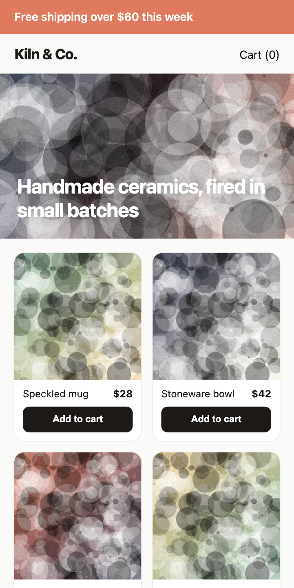

<img> in the HTML with fetchpriority="high" and a WebP srcset.loading="lazy".Real numbers: medians of 3 cold runs per page with perf_audit.mjs --interact ".add", mobile profile (Slow 4G, 4× CPU). Sources and full reports in examples/demo.